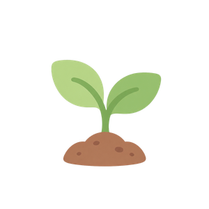
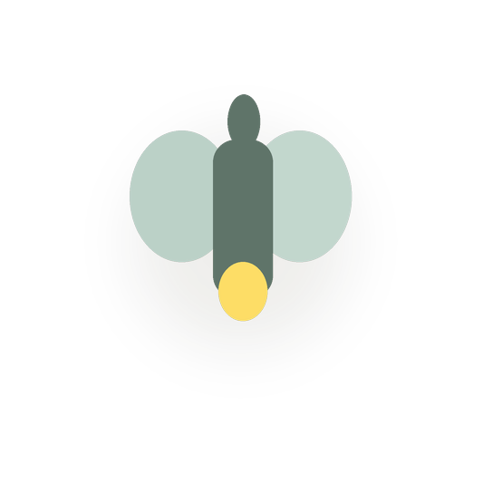

欢迎来到你的情绪花园
嗨，这一刻的你，感觉怎么样？点一下就好
下午好
记录已经不少啦，要不要备份一下？
数据只保存在这台设备的浏览器里，导出一份 JSON 存起来，换设备或清缓存也不怕丢失。
这个月，你已经照顾了自己 0 天
0
累计记录次数
–
近7天平均情绪
为你推荐
这种感觉有多明显？
今天的感觉，好像更多和什么有关？
想留一句话给今天吗？

我发现的小规律这些是记录中和情绪同时出现的关联，不代表因果——你可以告诉我们是否符合你的感觉
情绪趋势
情绪日历
最近 35 天，颜色越深代表当天情绪记录越正向
低落
愉悦
情绪关联分析
按出现次数排序，条形颜色代表该因素同时出现时的平均情绪；只是关联，不是原因
自我关怀方案
那今天先休息也可以。你已经完成了一次记录，这就足够了。
现在感觉怎么样？
呼吸练习
跟随圆圈的扩张与收缩调整呼吸，帮助神经系统平静下来
开始
 正念冥想
正念冥想

00:00
伴奏音乐
 背景音乐
背景音乐
治愈系环境音，点一首开始播放，会一直在后台陪着你
 运动建议
运动建议
历史记录
数据与隐私
所有记录仅保存在你当前浏览器的本地存储（localStorage）中，不会上传到任何服务器。清除浏览器数据会导致记录丢失，建议定期导出备份。

小萤（花园里的小伙伴）小萤是住在你花园里的一只小萤火虫，愿意的话随时可以找它说说话。它的话由 AI 生成，需要你自己的 Anthropic API Key 才能醒过来——对话内容会直接从这台设备发送到 Anthropic，不会经过我们的任何服务器，我们也看不到、存不到你的 Key 或聊天内容。默认是关闭的。小萤不能替代专业帮助，也不负责判断你是否安全，这部分始终由本地规则处理。
小萤还在睡觉
项目规划
这个项目还在持续更新。这里记录已经做了什么，以及接下来打算做什么。
已经上线
- 情绪记录：三步渐进式记录（强度 → 关联因素 → 一句话），一天可以记录多次
- 花园：每条记录种下一朵花，点开是完整的情绪记忆；每天进入花园有机会遇到一件小事
- 自我关怀：点低落/很糟会立即原地弹出关怀方案，不用跳转页面；按心情和关联因素自动匹配，一键直接开始对应的练习
- 发现（原洞察）：先给出可能的关联发现，再看趋势图表和情绪日历
- 延迟回访：低落的记录过几小时后，会主动问一句现在怎么样了
- 植物图鉴：记录强度较高时会长出不同品种的花，目前收录 13 种（第一版，素材会逐步替换）
- 安全支持：补充细节或聊天时如果出现明确的自伤/自杀意图表达，会弹出独立的引导界面，提供 12356 全国心理援助热线（24 小时可用）；连续几天记录到低落，也会主动提示这个号码
- 去掉了"连续打卡天数"，换成更贴合这个产品调性的月度记录统计
接下来打算做的
- 植物图鉴的素材：从现在的程序化调色，逐步换成更精致的手绘或生成素材
- 花园的生命周期：记录到一定次数解锁新的场景细节，累计一定天数后开启下一片主题花园
- 小萤（v0 已上线）：花园里的一只小萤火虫，需要你自己的 Anthropic API Key 才能醒过来（在这个页面上面设置），默认关闭，对话直接从你的设备发到 Anthropic，我们看不到也不存 Key 或聊天内容。目前只有最基础的自由对话，让多个关联因素合成更自然的话、长期回顾总结这些还没做
植物图鉴
已发现 0/13 种
强度比较高的记录，会结合当时的关联因素长出不同的品种——同一种心情，也可能开出不一样的花。
小萤
小萤说的话由 AI 生成，对话直接从这台设备发送到 Anthropic，不经过我们的服务器。它不能替代专业帮助。